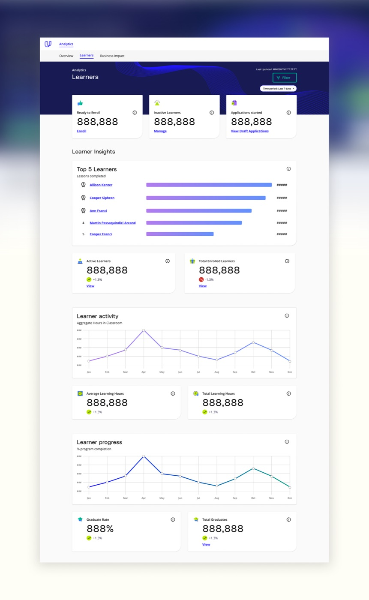
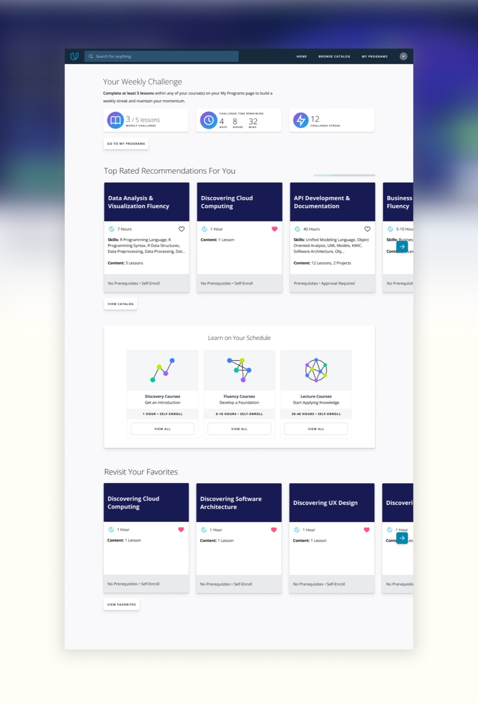
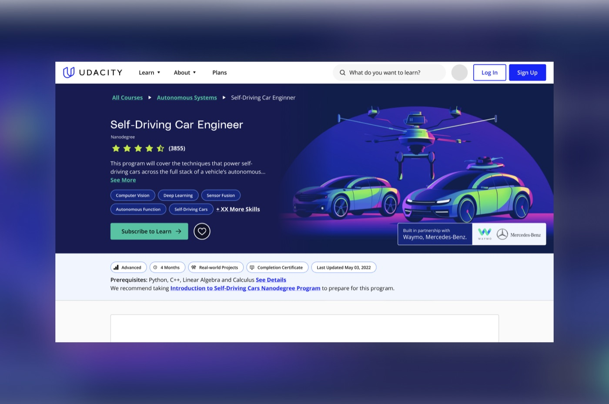

Scott Dickie
Scott Dickie
Becoming B2C first and elevating B2B
As Head of Design & Research, I guided product and brand design, introducing gamification and interactive experiences that made online learning more engaging and accessible for global learners. My leadership during this period of growth contributed directly to Udacity’s acquisition by Accenture, where its platform became part of a global learning portfolio.




Challenges
Udacity was evolving from a primarily B2C company into a B2B and government-focused provider. This shift required us to simultaneously build a brand-new B2B enterprise product while modernizing and improving the core B2C experience. Balancing these competing priorities demanded a clear design strategy, tight cross-functional alignment, and rapid execution. We also had to close significant gaps in user research, accessibility, and design maturity across both lines of business.
Solution
I developed a design strategy that addressed both B2C modernization and B2B product innovation. For B2C, we introduced gamification and launched an AI-powered classroom assistant, driving a +19% increase in weekly active users and a +14% boost in retention. Concurrently, I led the end-to-end design and beta launch of the new Enterprise platform, increasing customer engagement by 60%, increased product add-on sales, and reduced support costs by 30%.